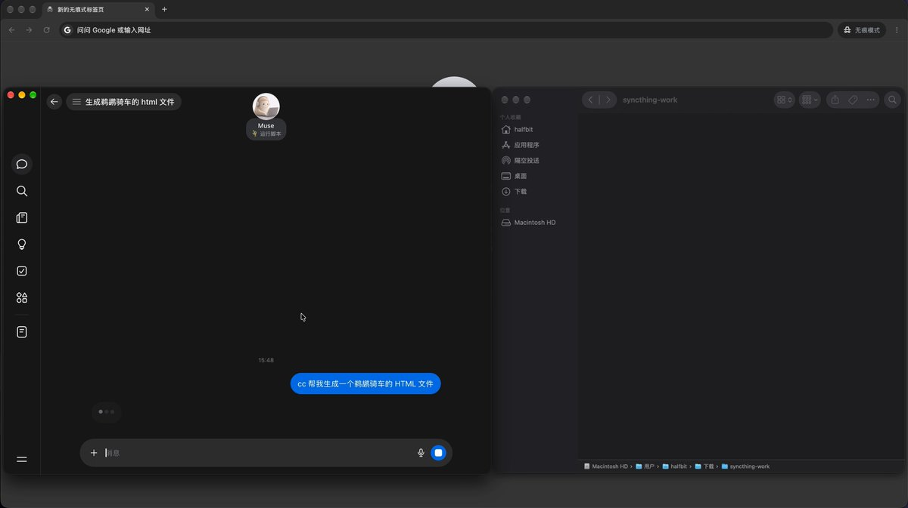

15 分钟打通 Muse 和你的电脑：写代码、办公、写文章、记笔记全交给它｜保姆级教程
Muse 的生产力，终于解放出来了。
我在 Muse 里说一句"cc 帮我生成一个鹈鹕骑车的 HTML 文件"，几秒后，这个文件就出现在我 Mac 的文件夹里，双击就能打开。

Muse 自带一台云端 Linux 虚拟机，能跑命令、改文件，可它一直碰不到你电脑上的东西。我用 Syncthing（一个开源的点对点文件同步工具）在 Mac 和这台虚拟机之间建了一个双向同步文件夹，把本地电脑和 Muse 彻底打通了。
视频里只演示了一个方向。打通之后能干的事多得多：把本地的代码仓库、工作文档、文章草稿、笔记库放进这个文件夹，写代码、办公、写文章、记笔记，都能直接交给 Muse。它在那边改，你本地的文件跟着更新，中间不用手动传任何东西。它也只能碰这一个文件夹，你电脑上别的东西看不到。
两台机器都得装 Syncthing。Mac 这边照着下面的流程走，虚拟机那边发一段 Prompt 给 Muse，让它自己装好配好。前后 15 分钟左右。
如果还没注册 Muse，可以先看下面这篇文章：
10 分钟 0 成本注册使用 Muse，最省劲：不用 Spark、不开 Gemini 会员｜保姆级教程
这几天 Muse 火得不行，我刷到的注册教程基本上都是一个套路：开 Gemini 会员，用 Spark 浏览器进去注册。不想花这个钱的，就去闲鱼找便宜的代充。
我今天下午折腾了一圈，发现根本不用这么绕：不用 Spark...
第一步：Mac 这边装好 Syncthing
1️⃣ 建一个要同步的文件夹
放哪都行，我放在"下载"里，叫 syncthing-work。之后 Muse 生成的东西都会落在这里。
2️⃣ 安装 Syncthing
bash
brew install syncthing3️⃣ 启动，顺便设成开机自启
bash
brew services start syncthing这条命令会把 Syncthing 注册成后台服务，电脑重启后它自己会起来，不用每次手动开。
4️⃣ 打开管理后台
5️⃣ 复制本机的 Device ID
右上角"操作" → "显示 ID"，把那一长串复制下来，待会儿要发给 Muse。
第二步：一条 Prompt，让 Muse 自己配好虚拟机
虚拟机那边我一行命令都没敲，全交给 Muse。下面这段直接复制发给它：
plaintext
在出站-only 的 Linux VM 上装 Syncthing，与本地电脑双向同步。
前置：用户已在本地电脑装好 Syncthing、拿到本地 Device ID、建好本地同步文件夹。
1. 先问用户：VM 上的共享文件夹放哪个位置（默认 ~/workspace/syncthing-work）。
2. 再向用户索要本地电脑的 Syncthing Device ID。配对只要 Device ID，不需要任何 IP。Folder ID 不用问，直接用 syncthing-work。
3. 跟用户确认以上信息，然后执行安装：在 VM 上安装 Syncthing（官方二进制，v2），初始化配置，建好同步目录，通过 API 配好共享文件夹（sendreceive + 文件监听）。
4. 让 Syncthing 后台常驻（systemd 不行就 nohup），加 cron 每 3 分钟巡检，挂了自动重启。
5. 安装完成后，把 VM 的 Device ID 发给用户；提示用户先去本地电脑的 Syncthing 管理界面把这个 Device ID 添加为设备，加完后回来告诉你。没得到确认不许往下走。
6. 用户确认加完后，在 VM 侧添加本地设备并共享文件夹。此时用户在本地 Syncthing 界面会看到"接受共享"的提示，点击并选择本地文件夹；让用户完成后回来告诉你。没得到确认不许往下走。
7. 双向测试连通性：VM 建文件看本地收到，用户在本地新建一个文本文件看 VM 收到；删测试文件，汇报连接类型和延迟。
连不上就查连接状态和日志：unknown device 是顺序问题，两边设备都加完后 pkill + nohup 重启（别用 API restart，会直接退出不重启）；relay 拨号有节流，配好后等几分钟。
每步汇报进展；合并命令，少弹审批。发出去之后，Muse 会先问你两件事：虚拟机上的文件夹放哪（用默认就行），以及你 Mac 的 Device ID，把上一步复制的贴给它。
执行过程中会弹出"允许 Muse 与 hatch-egress-proxy 分享信息？"。这是 Muse 在申请联网，下载 Syncthing、跟你的 Mac 建立连接都要经过它。这种审批会弹好几次，每次都点"总是允许此站点"就行。
装完之后，Muse 会在对话里把虚拟机的 Device ID 发给你，复制下来，下一步要用。
第三步：两边互相添加设备
1️⃣ Mac 添加 Muse 为远程设备
回到管理后台，右下角点"添加远程设备"。
设备 ID 粘贴 Muse 给的那串，设备名随便起，我写的 Muse，保存。
2️⃣ 告诉 Muse 加好了
回 Muse 说一声。它会在虚拟机那边把你的 Mac 加进来，再把 syncthing-work 共享过来。
3️⃣ 在 Mac 上接受共享
回到管理后台，先把顶上那条绿色的"GUI 身份验证"提示点"确定"关掉。这个管理后台默认只有本机能访问，不设密码也没关系。
下面会冒出一条黄色提示："Muse 想要共享文件夹 syncthing-work，添加新文件夹？"点"添加"。
4️⃣ 指向本地文件夹
文件夹 ID 已经自动填好了，别动。只改"文件夹路径"，填第一步建的那个 ~/Downloads/syncthing-work，保存。
⚠️ 这里不改路径的话，Syncthing 会在用户目录下另建一个同名文件夹，同步的东西就跑到那边去了，你盯着自己建的文件夹等半天也等不到。
5️⃣ 看状态
左边的文件夹和右边的远程设备都显示绿色"最新"，文件夹类型是"发送和接收"，那就是配好了。
第四步：双向测一下
跟 Muse 说接受完了，它会先在虚拟机里丢一个测试文件。我这边大约 4 秒，Mac 的文件夹里就有了。
反过来，我在 Mac 上把这个文件改了个名，让它看一眼，虚拟机那边也跟着变了。最后它把测试文件删掉，删除同样同步到了 Mac。延迟几秒。
实际用起来是什么样
回到开头那个视频。我在 Muse 里发了一句：cc 帮我生成一个鹈鹕骑车的 HTML 文件。
cc 是我之前在 Muse 里装好的 Claude Code。装完跟它商量好了：以后消息带 cc 前缀，就是要用 Claude Code 来跑。
Muse 回了一句"Claude Code 写好后我会同步给你"。没过几秒，pelican-bike.html 就出现在 Mac 的 syncthing-work 里。
拖进浏览器，是一只戴着头盔骑车的鹈鹕，下面还有个速度滑块，按空格能猛蹬加速。
总结
✅ 用 Syncthing 在 Mac 和 Muse 的虚拟机之间建一个双向同步文件夹
✅ Mac 这边 5 步装好，虚拟机那边一条 Prompt 交给 Muse
✅ 配好后双向同步，延迟几秒，Muse 生成的文件直接落到本地
✅ 把本地的代码仓库、工作目录放进同步文件夹，Muse 就能直接在上面改代码、写笔记、写文章
💡 最重要的坑：两边加设备有先后，没加完就连会报 unknown device。都加完之后 pkill 再 nohup 重启，别用 API restart
Prompt 就在上面，直接抄。
有问题随时问，看到都回 💬
觉得有用？转给同样需要的朋友 🔄